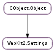

| Name | Type | Flags | Description |
|---|---|---|---|
| allow-modal-dialogs | bool | r/w | Whether it is possible to create modal dialogs |
| auto-load-images | bool | r/w | Load images automatically. |
| cursive-font-family | str | r/w | The font family used as the default for content using cursive font. |
| default-charset | str | r/w | The default text charset used when interpreting content with unspecified charset. |
| default-font-family | str | r/w | The font family to use as the default for content that does not specify a font. |
| default-font-size | int | r/w | The default font size used to display text. |
| default-monospace-font-size | int | r/w | The default font size used to display monospace text. |
| draw-compositing-indicators | bool | r/w | Whether to draw compositing borders and repaint counters |
| enable-accelerated-2d-canvas | bool | r/w | Whether to enable accelerated 2D canvas |
| enable-caret-browsing | bool | r/w | Whether to enable accessibility enhanced keyboard navigation |
| enable-developer-extras | bool | r/w | Whether to enable developer extras |
| enable-dns-prefetching | bool | r/w | Whether to enable DNS prefetching |
| enable-frame-flattening | bool | r/w | Whether to enable frame flattening. |
| enable-fullscreen | bool | r/w | Whether to enable the Javascriipt Fullscreen API |
| enable-html5-database | bool | r/w | Whether to enable HTML5 database support. |
| enable-html5-local-storage | bool | r/w | Whether to enable HTML5 Local Storage support. |
| enable-hyperlink-auditing | bool | r/w | Whether should be able to send pings. |
| enable-java | bool | r/w | Whether Java support should be enabled. |
| enable-javascript | bool | r/w | Enable JavaScript. |
| enable-offline-web-application-cache | bool | r/w | Whether to enable offline web application cache. |
| enable-page-cache | bool | r/w | Whether the page cache should be used |
| enable-plugins | bool | r/w | Enable embedded plugin objects. |
| enable-private-browsing | bool | r/w | Whether to enable private browsing |
| enable-resizable-text-areas | bool | r/w | Whether to enable resizable text areas |
| enable-site-specific-quirks | bool | r/w | Enables the site-specific compatibility workarounds |
| enable-smooth-scrolling | bool | r/w | Whether to enable smooth scrolling |
| enable-tabs-to-links | bool | r/w | Whether to enable tabs to links |
| enable-webaudio | bool | r/w | Whether WebAudio content should be handled |
| enable-webgl | bool | r/w | Whether WebGL content should be rendered |
| enable-write-console-messages-to-stdout | bool | r/w | Whether to write console messages on stdout |
| enable-xss-auditor | bool | r/w | Whether to enable the XSS auditor. |
| fantasy-font-family | str | r/w | The font family used as the default for content using fantasy font. |
| javascript-can-access-clipboard | bool | r/w | Whether JavaScript can access Clipboard |
| javascript-can-open-windows-automatically | bool | r/w | Whether JavaScript can open windows automatically. |
| load-icons-ignoring-image-load-setting | bool | r/w | Whether to load site icons ignoring image load setting. |
| media-playback-allows-inline | bool | r/w | Whether media playback allows inline |
| media-playback-requires-user-gesture | bool | r/w | Whether media playback requires user gesture |
| minimum-font-size | int | r/w | The minimum font size used to display text. |
| monospace-font-family | str | r/w | The font family used as the default for content using monospace font. |
| pictograph-font-family | str | r/w | The font family used as the default for content using pictograph font. |
| print-backgrounds | bool | r/w | Whether background images should be drawn during printing |
| sans-serif-font-family | str | r/w | The font family used as the default for content using sans-serif font. |
| serif-font-family | str | r/w | The font family used as the default for content using serif font. |
| user-agent | str | r/w | The user agent string |
| zoom-text-only | bool | r/w | Whether zoom level of web view changes only the text size |
None
| Name | Type | Access |
|---|---|---|
| parent_instance | GObject.Object | r |
Bases: GObject.Object
| Returns: | a new WebKit2.Settings instance. |
|---|---|
| Return type: | WebKit2.Settings |
Creates a new WebKit2.Settings instance with default values. It must be manually attached to a WebKit2.WebViewGroup. See also WebKit2.Settings.new_with_settings ().
| Returns: | True if it’s allowed to create and run modal dialogs or False otherwise. |
|---|---|
| Return type: | bool |
Get the WebKit2.Settings :allow-modal-dialogs property.
| Returns: | True If auto loading of images is enabled or False otherwise. |
|---|---|
| Return type: | bool |
Get the WebKit2.Settings :auto-load-images property.
| Returns: | The default font family used to display content marked with cursive font. |
|---|---|
| Return type: | str |
Gets the WebKit2.Settings :cursive-font-family property.
| Returns: | Default charset. |
|---|---|
| Return type: | str |
Gets the WebKit2.Settings :default-charset property.
| Returns: | The default font size. |
|---|---|
| Return type: | int |
Gets the WebKit2.Settings :default-font-size property.
| Returns: | Default monospace font size. |
|---|---|
| Return type: | int |
Gets the WebKit2.Settings :default-monospace-font-size property.
| Returns: | True If compositing borders are drawn or False otherwise. |
|---|---|
| Return type: | bool |
Get the WebKit2.Settings :draw-compositing-indicators property.
| Returns: | True if accelerated 2D canvas is enabled or False otherwise. |
|---|---|
| Return type: | bool |
Get the WebKit2.Settings :enable-accelerated-2d-canvas property.
| Returns: | True If caret browsing is enabled or False otherwise. |
|---|---|
| Return type: | bool |
Get the WebKit2.Settings :enable-caret-browsing property.
| Returns: | True If developer extras is enabled or False otherwise. |
|---|---|
| Return type: | bool |
Get the WebKit2.Settings :enable-developer-extras property.
| Returns: | True If DNS prefetching is enabled or False otherwise. |
|---|---|
| Return type: | bool |
Get the WebKit2.Settings :enable-dns-prefetching property.
| Returns: | True If frame flattening is enabled or False otherwise. |
|---|---|
| Return type: | bool |
Get the WebKit2.Settings :enable-frame-flattening property.
| Returns: | True If fullscreen support is enabled or False otherwise. |
|---|---|
| Return type: | bool |
Get the WebKit2.Settings :enable-fullscreen property.
| Returns: | True If HTML5 database support is enabled or False otherwise. |
|---|---|
| Return type: | bool |
Get the WebKit2.Settings :enable-html5-database property.
| Returns: | True If HTML5 local storage support is enabled or False otherwise. |
|---|---|
| Return type: | bool |
Get the WebKit2.Settings :enable-html5-local-storage property.
| Returns: | True If hyper link auditing is enabled or False otherwise. |
|---|---|
| Return type: | bool |
Get the WebKit2.Settings :enable-hyperlink-auditing property.
| Returns: | True If Java is enabled or False otherwise. |
|---|---|
| Return type: | bool |
Get the WebKit2.Settings :enable-java property.
| Returns: | True If JavaScript is enabled or False otherwise. |
|---|---|
| Return type: | bool |
Get the WebKit2.Settings :enable-javascript property.
| Returns: | True If HTML5 offline web application cache support is enabled or False otherwise. |
|---|---|
| Return type: | bool |
Get the WebKit2.Settings :enable-offline-web-application-cache property.
| Returns: | True if page cache enabled or False otherwise. |
|---|---|
| Return type: | bool |
Get the WebKit2.Settings :enable-page-cache property.
| Returns: | True If plugins are enabled or False otherwise. |
|---|---|
| Return type: | bool |
Get the WebKit2.Settings :enable-plugins property.
| Returns: | True If private browsing is enabled or False otherwise. |
|---|---|
| Return type: | bool |
Get the WebKit2.Settings :enable-private-browsing property.
| Returns: | True If text areas can be resized or False otherwise. |
|---|---|
| Return type: | bool |
Get the WebKit2.Settings :enable-resizable-text-areas property.
| Returns: | True if site specific quirks are enabled or False otherwise. |
|---|---|
| Return type: | bool |
Get the WebKit2.Settings :enable-site-specific-quirks property.
| Returns: | True if smooth scrolling is enabled or False otherwise. |
|---|---|
| Return type: | bool |
Get the WebKit2.Settings :enable-smooth-scrolling property.
| Returns: | True If tabs to link is enabled or False otherwise. |
|---|---|
| Return type: | bool |
Get the WebKit2.Settings :enable-tabs-to-links property.
| Returns: | True If webaudio support is enabled or False otherwise. |
|---|---|
| Return type: | bool |
Get the WebKit2.Settings :enable-webaudio property.
| Returns: | True If webgl support is enabled or False otherwise. |
|---|---|
| Return type: | bool |
Get the WebKit2.Settings :enable-webgl property.
| Returns: | True if writing console messages to stdout is enabled or False otherwise. |
|---|---|
| Return type: | bool |
Get the WebKit2.Settings :enable-write-console-messages-to-stdout property.
| Returns: | True If XSS auditing is enabled or False otherwise. |
|---|---|
| Return type: | bool |
Get the WebKit2.Settings :enable-xss-auditor property.
| Returns: | The default font family used to display content marked with fantasy font. |
|---|---|
| Return type: | str |
Gets the WebKit2.Settings :fantasy-font-family property.
| Returns: | True If javascript-can-access-clipboard is enabled or False otherwise. |
|---|---|
| Return type: | bool |
Get the WebKit2.Settings :javascript-can-access-clipboard property.
| Returns: | True If JavaScript can open window automatically or False otherwise. |
|---|---|
| Return type: | bool |
Get the WebKit2.Settings :javascript-can-open-windows-automatically property.
| Returns: | True If site icon can be loaded irrespective of image loading preference or False otherwise. |
|---|---|
| Return type: | bool |
Get the WebKit2.Settings :load-icons-ignoring-image-load-setting property.
| Returns: | True If inline playback is allowed for media or False if only fullscreen playback is allowed. |
|---|---|
| Return type: | bool |
Get the WebKit2.Settings :media-playback-allows-inline property.
| Returns: | True If an user gesture is needed to play or load media or False if no user gesture is needed. |
|---|---|
| Return type: | bool |
Get the WebKit2.Settings :media-playback-requires-user-gesture property.
| Returns: | Minimum font size. |
|---|---|
| Return type: | int |
Gets the WebKit2.Settings :minimum-font-size property.
| Returns: | Default font family used to display content marked with monospace font. |
|---|---|
| Return type: | str |
Gets the WebKit2.Settings :monospace-font-family property.
| Returns: | The default font family used to display content marked with pictograph font. |
|---|---|
| Return type: | str |
Gets the WebKit2.Settings :pictograph-font-family property.
| Returns: | True If background images should be printed or False otherwise. |
|---|---|
| Return type: | bool |
Get the WebKit2.Settings :print-backgrounds property.
| Returns: | The default font family used to display content marked with sans-serif font. |
|---|---|
| Return type: | str |
Gets the WebKit2.Settings :sans-serif-font-family property.
| Returns: | The default font family used to display content marked with serif font. |
|---|---|
| Return type: | str |
Gets the WebKit2.Settings :serif-font-family property.
| Returns: | The current value of the user-agent property. |
|---|---|
| Return type: | str |
Get the WebKit2.Settings :user-agent property.
| Returns: | True If zoom level of the view should only affect the text or False if all view contents should be scaled. |
|---|---|
| Return type: | bool |
Get the WebKit2.Settings :zoom-text-only property.
| Parameters: | allowed (bool) – Value to be set |
|---|
Set the WebKit2.Settings :allow-modal-dialogs property.
| Parameters: | enabled (bool) – Value to be set |
|---|
Set the WebKit2.Settings :auto-load-images property.
| Parameters: | cursive_font_family (str) – the new default cursive font family |
|---|
Set the WebKit2.Settings :cursive-font-family property.
| Parameters: | default_charset (str) – default charset to be set |
|---|
Set the WebKit2.Settings :default-charset property.
| Parameters: | default_font_family (str) – the new default font family |
|---|
Set the WebKit2.Settings :default-font-family property.
| Parameters: | font_size (int) – default font size to be set in pixels |
|---|
Set the WebKit2.Settings :default-font-size property.
| Parameters: | font_size (int) – default monospace font size to be set in pixels |
|---|
Set the WebKit2.Settings :default-monospace-font-size property.
| Parameters: | enabled (bool) – Value to be set |
|---|
Set the WebKit2.Settings :draw-compositing-indicators property.
| Parameters: | enabled (bool) – Value to be set |
|---|
Set the WebKit2.Settings :enable-accelerated-2d-canvas property.
| Parameters: | enabled (bool) – Value to be set |
|---|
Set the WebKit2.Settings :enable-caret-browsing property.
| Parameters: | enabled (bool) – Value to be set |
|---|
Set the WebKit2.Settings :enable-developer-extras property.
| Parameters: | enabled (bool) – Value to be set |
|---|
Set the WebKit2.Settings :enable-dns-prefetching property.
| Parameters: | enabled (bool) – Value to be set |
|---|
Set the WebKit2.Settings :enable-frame-flattening property.
| Parameters: | enabled (bool) – Value to be set |
|---|
Set the WebKit2.Settings :enable-fullscreen property.
| Parameters: | enabled (bool) – Value to be set |
|---|
Set the WebKit2.Settings :enable-html5-database property.
| Parameters: | enabled (bool) – Value to be set |
|---|
Set the WebKit2.Settings :enable-html5-local-storage property.
| Parameters: | enabled (bool) – Value to be set |
|---|
Set the WebKit2.Settings :enable-hyperlink-auditing property.
| Parameters: | enabled (bool) – Value to be set |
|---|
Set the WebKit2.Settings :enable-java property.
| Parameters: | enabled (bool) – Value to be set |
|---|
Set the WebKit2.Settings :enable-javascript property.
| Parameters: | enabled (bool) – Value to be set |
|---|
Set the WebKit2.Settings :enable-offline-web-application-cache property.
| Parameters: | enabled (bool) – Value to be set |
|---|
Set the WebKit2.Settings :enable-page-cache property.
| Parameters: | enabled (bool) – Value to be set |
|---|
Set the WebKit2.Settings :enable-plugins property.
| Parameters: | enabled (bool) – Value to be set |
|---|
Set the WebKit2.Settings :enable-resizable-text-areas property.
| Parameters: | enabled (bool) – Value to be set |
|---|
Set the WebKit2.Settings :enable-site-specific-quirks property.
| Parameters: | enabled (bool) – Value to be set |
|---|
Set the WebKit2.Settings :enable-smooth-scrolling property.
| Parameters: | enabled (bool) – Value to be set |
|---|
Set the WebKit2.Settings :enable-tabs-to-links property.
| Parameters: | enabled (bool) – Value to be set |
|---|
Set the WebKit2.Settings :enable-webaudio property.
| Parameters: | enabled (bool) – Value to be set |
|---|
Set the WebKit2.Settings :enable-webgl property.
| Parameters: | enabled (bool) – Value to be set |
|---|
Set the WebKit2.Settings :enable-write-console-messages-to-stdout property.
| Parameters: | enabled (bool) – Value to be set |
|---|
Set the WebKit2.Settings :enable-xss-auditor property.
| Parameters: | fantasy_font_family (str) – the new default fantasy font family |
|---|
Set the WebKit2.Settings :fantasy-font-family property.
| Parameters: | enabled (bool) – Value to be set |
|---|
Set the WebKit2.Settings :javascript-can-access-clipboard property.
| Parameters: | enabled (bool) – Value to be set |
|---|
Set the WebKit2.Settings :javascript-can-open-windows-automatically property.
| Parameters: | enabled (bool) – Value to be set |
|---|
Set the WebKit2.Settings :load-icons-ignoring-image-load-setting property.
| Parameters: | enabled (bool) – Value to be set |
|---|
Set the WebKit2.Settings :media-playback-allows-inline property.
| Parameters: | enabled (bool) – Value to be set |
|---|
Set the WebKit2.Settings :media-playback-requires-user-gesture property.
| Parameters: | font_size (int) – minimum font size to be set in points |
|---|
Set the WebKit2.Settings :minimum-font-size property.
| Parameters: | monospace_font_family (str) – the new default monospace font family |
|---|
Set the WebKit2.Settings :monospace-font-family property.
| Parameters: | pictograph_font_family (str) – the new default pictograph font family |
|---|
Set the WebKit2.Settings :pictograph-font-family property.
| Parameters: | print_backgrounds (bool) – Value to be set |
|---|
Set the WebKit2.Settings :print-backgrounds property.
| Parameters: | sans_serif_font_family (str) – the new default sans-serif font family |
|---|
Set the WebKit2.Settings :sans-serif-font-family property.
| Parameters: | serif_font_family (str) – the new default serif font family |
|---|
Set the WebKit2.Settings :serif-font-family property.
| Parameters: | user_agent (str or None) – The new custom user agent string or None to use the default user agent |
|---|
Set the WebKit2.Settings :user-agent property.
| Parameters: |
|---|
Set the WebKit2.Settings :user-agent property by appending the application details to the default user agent. If no application name or version is given, the default user agent used will be used. If only the version is given, the default engine version is used with the given application name.
| Parameters: | zoom_text_only (bool) – Value to be set |
|---|
Set the WebKit2.Settings :zoom-text-only property.